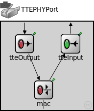
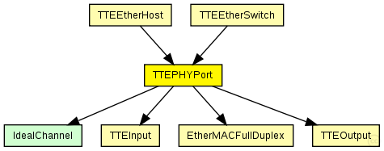

This documentation is released under the Creative Commons license
This documentation is released under the Creative Commons licenseThe TTEPHYPort is a compund module that contains the TTEOutput, TTEInput and MAC (EtherMACFullDuplex) It represents a physical port for a TTEthernet device (Switch or Host)
See also: IPort, TTEOutput, TTEInput, EtherMACFullDuplex
Author: Till Steinbach
The following diagram shows usage relationships between types. Unresolved types are missing from the diagram. Click here to see the full picture.
The following diagram shows inheritance relationships for this type. Unresolved types are missing from the diagram. Click here to see the full picture.

| Name | Type | Description |
|---|---|---|
| TTEEtherHost | compound module |
Module for a TTEthernet Host. Contains a EtherLLC for best-effort traffic, a TTEPHYPort module as physical port, sync module (Sync) and a TTEScheduler module. The Host is configured by the provided TTEthernet XML network configuration (network_configuration parameter) and uses the device_name parameter to find its config. The configuration is done by the BufferManager that deletes itself at runtime. |
| TTEEtherSwitch | compound module |
Module for a TTEthernet Switch with variable number of ports. Contains a configurable best-effort implementation (beRelayUnitType like IMACRelayUnit), TTEPHYPort modules for physical ports, sync module (Sync) and a TTEScheduler module. The switch is configured by the provided TTEthernet XML network configuration (network_configuration parameter) and uses the device_name parameter to find its config. The configuration is done by the BufferManager that deletes itself at runtime. |
| Name | Value | Description |
|---|---|---|
| display | bgb=188,180;i=device/port |
| Name | Direction | Size | Description |
|---|---|---|---|
| upperLayerIn | input |
Input from the upper layer for best-effort Traffic |
|
| upperLayerOut | output |
Output to the upper layer for best-effort Traffic |
|
| phys | inout |
Connection to the physical layer |
|
| TTin | input |
Input from the upper layer for time-triggered traffic |
|
| RCin | input |
Input from the upper layer for rate-constrained traffic |
| Name | Type | Default value | Description |
|---|---|---|---|
| mac.address | string | "auto" |
MAC address as hex string (12 hex digits), or "auto". "auto" values will be replaced by a generated MAC address in init stage 0. |
| mac.txQueueLimit | int | 1000 |
maximum number of frames queued up for transmission; additional frames are dropped. Only used if queueModule=="" |
| mac.frameBursting | bool | true |
enable/disable frame bursting mode in Gigabit Ethernet |
| mac.mtu | int | 1500 |
// The TTEPHYPort is a compund module that contains the TTEOutput, TTEInput and MAC (EtherMACFullDuplex) // It represents a physical port for a TTEthernet device (Switch or Host) // // @see IPort, TTEOutput, TTEInput, EtherMACFullDuplex // // @author Till Steinbach module TTEPHYPort like IPort { parameters: @display("bgb=188,180;i=device/port"); gates: //Input from the upper layer for best-effort Traffic input upperLayerIn @loose @labels(EtherFrame); //Output to the upper layer for best-effort Traffic output upperLayerOut @loose @labels(EtherFrame); //Connection to the physical layer inout phys @labels(EtherFrame); //Input from the upper layer for time-triggered traffic input TTin @directIn @labels(CTFrame); //Input from the upper layer for rate-constrained traffic input RCin @directIn @labels(CTFrame); submodules: //Module for the organisation of outbound traffic tteOutput: TTEOutput { @display("p=48,45"); } //Module for the organisation of inbound traffic tteInput: TTEInput { @display("p=142,45"); } //MAC interface mac: EtherMACFullDuplex { parameters: promiscuous = true; //MAC must be set promiscuous to allow for CT receiption queueModule = "tteOutput";//The tteOutput-Module(TTEOutput) is used as external queue for the interface @display("p=87,139"); } connections: upperLayerIn --> tteOutput.in; upperLayerOut <-- tteInput.out; tteOutput.out --> mac.upperLayerIn; tteInput.in <-- mac.upperLayerOut; phys <--> mac.phys; TTin --> tteOutput.TTin; RCin --> tteOutput.RCin; }
This documentation is released under the Creative Commons license